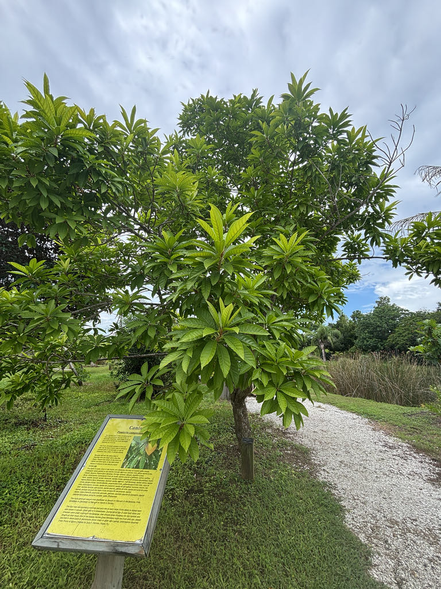

- The flesh of a ripe canistel has the dense, dry, creamy texture of a hard-boiled egg yolk — which is exactly where both its common names come from. It is sweet rather than savory, and closer in flavor to sweet potato pie or baked pumpkin than anything else in the fruit bowl.
- Canistel is not a fruit that evolved for birds — it evolved for mammals. Its large size, heavy seeds, dense aromatic pulp, and golden-orange color fit the classic Neotropical mammal-dispersal syndrome, attracting primates, opossums, and other terrestrial and arboreal mammals in its native lowland forests.
- Unlike most fruits, canistel continues to ripen after you pick it — but timing the harvest is tricky. Fruit picked too firm may never soften properly and stays astringent no matter how long you wait.
- Florida growers have spent decades selecting named canistel cultivars, and the results are on shelves at tropical fruit nurseries across the state. UF/IFAS recommends four by name — Oro, Fairchild #1, Trompo, and Bruce — each chosen for improvements in fruit size, texture, or flavor over unpredictable seedling trees.
Canistel is native to the lowland forests of southern Mexico, Belize, Guatemala, and El Salvador. From that Central American core it spread — mostly through cultivation — across the Caribbean, and later to Southeast Asia, East Africa, and Australia.
UF/IFAS records its introduction to Florida in the early 20th century. It took root most readily in the warm, frost-free counties of South Florida and the Keys, where it has been a quiet staple of tropical fruit collections and dooryard gardens ever since.
- The Sapotaceae family has a long history of producing economically important tropical fruits, and canistel sits comfortably in that company. Its closest relatives here in the park include mamey sapote and sapodilla — all share the family's characteristic milky latex and glossy foliage.
- The species name campechiana means 'of Campeche,' referring to the Campeche region on Mexico's Yucatán Peninsula, where Humboldt and Bonpland first formally described the tree for science in the early 19th century. The bark of canistel is brown and furrowed, and the trunk oozes a sticky white sap when cut, which can gum up pruning tools.
- Harvesting canistel well takes practice. The fruit is climacteric — it keeps ripening after you pick it — but fruit taken from the tree too early may remain dry, mealy, and unpleasantly astringent no matter how long it sits. The signal to harvest is when the skin turns from green to yellow-orange; after that, let it sit at room temperature until it gives slightly to the touch.
- Across Latin America and the Caribbean, ripe canistel pulp is blended into milk-based drinks called batidos, folded into custards and ice creams, and used as a filling for pies and pastries — the same rich, starchy sweetness that makes it unusual eaten raw makes it a natural in cooked desserts.
- Florida growers have developed a range of named cultivars over the decades — Oro, Bruce, Trompo, and Fairchild No. 1 among them — each selected for improvements in fruit size, shape, or flavor. Grafted trees are strongly preferred over seedlings: seedling trees may take three to six years or more to bear fruit, and the results are unpredictable.
Canistel flowers are pollinated by insects, and the small, fragrant, cream-colored blossoms can attract generalist bees. Beyond pollination, the fruit's vivid golden color and dense, aromatic pulp are not a signal aimed at birds — they are classic mammal-dispersal traits.
In canistel's native lowland Neotropical forests, seed dispersal is driven by arboreal and terrestrial mammals such as primates and opossums, whose size and foraging behavior suit the large, heavy fruit.
In a Florida garden setting, those native mammal dispersers are absent, so the tree depends almost entirely on humans for seed movement. The evergreen canopy still provides shelter and perching habitat for birds year-round, and the dense, glossy foliage contributes to garden-level structural diversity — but frugivorous bird activity in the canopy will be minimal by design.
Small, cream-colored, and fragrant — produced singly or in small clusters along the branches. They have a silky texture and are bisexual. Insect-pollinated.
Highly variable in shape — round, oval, spindle-shaped, or obovate, often with a pointed tip. Skin is thin, waxy, and smooth; green when immature, turning bright yellow to orange-yellow at maturity. Fruit range from roughly 3 to 5 inches long.
One to four large, smooth, glossy brown seeds per fruit. Seeds lose viability quickly and should be planted within days of removal from the fruit.
Grafted trees are standard in Florida cultivation — they fruit sooner and produce predictably. Seedling trees may take three to six years to bear, with variable results. Air-layering and cleft grafting are also used.
Leaves are evergreen, lanceolate to obovate, thin, and glossy — spirally arranged and clustered toward the branch tips, a characteristic field mark of the Sapotaceae family. Bark is brown and wrinkled; the trunk and branches exude a white, sticky latex when cut.
Scan the branch tips for the spirally arranged, glossy leaves — they cluster densely toward the ends of the branches and droop slightly, a signature growth pattern in Sapotaceae. In fruit, the golden-yellow to orange skin is unmistakable and catches the light.
Look closely at the stem end of the fruit: a small, persistent calyx is often visible there. The bark is brown and furrowed, and a small nick will reveal the white latex beneath. Flowers are easy to miss — small, cream-colored, and tucked among the leaves.
The ripe fruit is perfectly safe to eat and quite nutritious — rich in beta-carotene, niacin, and potassium. Unripe fruit is astringent and unpleasant but not dangerous. The tree's milky latex sap can be a mild skin irritant for sensitive individuals, so wear gloves when pruning. Otherwise the tree is harmless to people and pets.
Canistel appears on Miami-Dade County's local invasive and prohibited plant list, and escape from cultivation into natural areas has been documented in extreme South Florida.
The watch_invasive flag is set to false for this sign because the species is not currently listed as a FISC (formerly FLEPPC) Category I or II invasive at the statewide level, and its cold sensitivity limits naturalization potential in Manatee County's climate. Visitors in South Florida should check local ordinances before planting.
On taxonomy: the accepted botanical name used by USDA Plants, UF/IFAS, Flora of North America, and most North American horticultural institutions is Pouteria campechiana (Kunth) Baehni.
The name on this tree's tag — Lucuma campechiana Kunth — is the original basionym and is treated as the accepted name by Kew's Plants of the World Online following recent molecular work reinstating the genus Lucuma; both names refer to the same plant.
The specific epithet campechiana means 'of Campeche,' honoring the region on Mexico's Yucatán Peninsula where the species was first formally described.


- © Lilah Thomas (CC-BY-NC), via iNaturalist